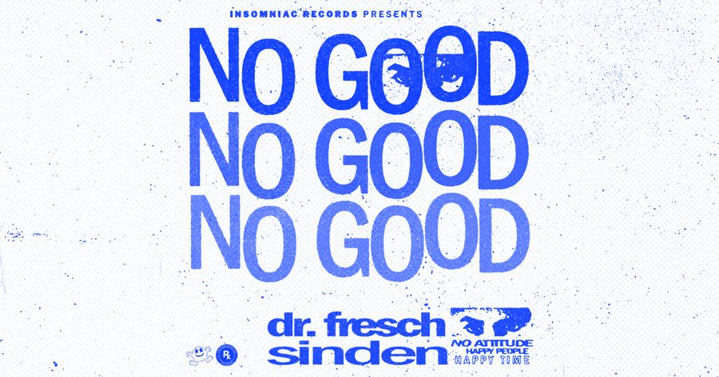

Dr. Fresch & Sinden Unite Across Generations of Noise on ‘No Good’ EP for Insomniac Records


It’s hard to imagine a more exciting collaboration than the two producers who feature together on the newly released No Good EP that’s just dropped on Insomniac Records. Sinden is a true pioneer of noisy, subversive house music, and he has been holding it down on that front for well over a decade now. Meanwhile, Dr. Fresch is a now-household name in the Stateside scene as an artist who’s perfected the sound he refers to as Ghetto house, which blends the energy of four-four with the swag and vocals of hip-hop.
No Good is the sound of two generations of noise merchants getting together to stir up a bit of trouble, a two-track EP that represents the perfect fusion of their respective sounds. According to Fresch, the collaboration holds extra weight because of how Graeme Sinden influenced his early days.
“Even before I started experimenting with G-house back in 2011, Graeme’s music was inspiring me to design gnarly basslines in my early years of production,” he says. “It was the music I made in those years, when I was following bloghaus heavily, that later inspired me to carve out the sound design that’s made some of my basslines so unique in the last few years.”
Both producers are situated at the coalface of cutting-edge US house music at the moment. Sinden has recently launched his Houseline label, carefully curating it as a labor of love, while Dr. Fresch is taking his hip-hop-soaked grooves to the next level with his new Prescription Records imprint. However, the No Good EP sees them putting these projects aside for the moment for one high-impact, extremely loud collaboration. Let’s find out more.
Dr. Fresch and Sinden’s No Good EP is available here.
Congrats on the exciting new release and for such a cool collaboration. The notion of you two working together is pretty exciting. What’s the story behind this project?
Sinden: Tony and I have been talking about this collab for a while—in fact, we took a few stabs at it but what we had, we weren’t 100 percent into them. We chilled on it on for a while but returned to work later that year. I’m glad we persevered, because “No Good” came together quickly, and it turned out really sick, as did “Bomba Deng”!
Dr. Fresch: We’re really excited about this project for many reasons; it’s truly a complete mix of both of our styles. Graeme and I initially got together through the L.A. house scene, but I’d been onto his music for years. I first heard G’s music back in high school in 2008; then I got to see him perform with the Bloody Beetroots in L.A. in April 2010. But during Graeme’s set, I got kicked out of the venue for using a fake ID to buy drinks, haha—was a night I’ll never forget.
Creatively, where do the two of you intersect, and where do you contrast?
Sinden: We intersect a lot. It’s funny, ‘cause Tony told me the story of when he got kicked out of one of my shows nine years ago. Anyway, I was dead when he told me that, so we definitely bonded over old bloghaus stuff (we sometimes found ourselves going into YouTube rabbit holes). Mostly now, though, we bond over a lot of the new club sounds, tech house, bass house, etc.
Dr. Fresch: Graeme and I have a mutual love for bloghaus, as well as ‘90s UK rave culture, and he’s nothing short of a veteran kingpin and a wealth of knowledge. The collaborative process was educational in many ways, too, as G was constantly showing me cuts of joints I’d never heard before. Our sounds intersect in a space driven by gritty yet groovy bassline house and wacky rave textures. Those are, respectively, the themes of “No Good” and “Bomba Deng.” We contrast in style in regards to bass sound design at times, with my music being more maximal than Graeme’s in some cases, though these two tracks are the truly the perfect blend.
Sinden, you’ve been a true pioneer of the more subversive side of house music for the past decade. What’re your thoughts on the new sounds brewing at the moment?
Sinden: There are some great sounds coming through clubland, and it’s true—I’m drawn to a subversive sound of house or weirdo stuff, I guess, so I like anything that takes risks or sounds fresh to my ears. It’s a good time for house music in a lot of the American cities I travel to. We are fortunate that audiences love house music in a way that I have never seen out here. There are lots of great producers to discover, and I like to showcase that on my label, Houseline. Respect to the Dumb Fat Records gang, and what Lucati and Dateless are doing, especially.
“Bomba Deng” comes packing with a pulsing energy and momentum that should prove pretty damn effective in a club setting—more so than I’ve heard in a club track for a while.
Dr. Fresch: Thank you, dude! “Bomba Deng“ is the product of blending modern house with ‘90s rave. It’s a blend between sleek bass and percussion production and wild, ravey vocal cuts and FX. The acid bassline developing throughout the track also gives the song added value to DJs and encourages you to experience the journey of the full record, true to form with ‘90s style.
Sinden: We finished “No Good” first, and we wanted to make another one to complement it. We had this idea of doing something techier rather than make something in the same vein as “No Good.” “Bomba Deng” has a different energy to it. I’ve been embracing more tech-sounding tracks in my sets, so I wanted to make sure we represented another side.
“No Good” is alternatively a bit more varied and chaotic (in the best kind of way), with a great vocal and some gritty bassline action. Were you looking for this contrast?
Sinden: Definitely. I think the project is tons more interesting when you can flip a few different styles. To me, they sound contrasting but similar at the same time with a ‘90s vibe, raves stabs, chords, the vocals. When you get under the bonnet, you can see a lot more resemblance with sound design and shared elements and a coming together of our respective styles.
Dr. Fresch: Love that perspective! “No Good” and “Bomba Deng” definitely contrast in major ways, but it’s the homage to ‘90s rave that is the common denominator between the two. In “No Good,” we wanted the chorus/breakdown section to be ‘90s UKG-inspired, and we wanted the drop to be representative of modern UK bass, but with a serious groove involved.
You’re both running your own respective labels that you’ve launched recently, which have strong ties to the US party scene. How do you see these imprints developing?
Dr. Fresch: The Prescription began as an extension of the sound of Dr. Fresch, and with each release, we’re building a family of artists who share a similar vision in the G-house and bass house space. We’re releasing music from artists whom I’ve worked with for years, as well as artists brand-new to the scene who are creating a unique footprint. And the parties we are doing across the country (and soon world) are representative of each of those scenes, as we highlight the artists performing as having just as a big of a role as I do. I love how different scenes around the globe are interpreting G-house in different ways, and I’m excited to be a part of that.
Sinden: I want to keep putting out music that I love and believe in. I’ve seen a lot of artists that I’ve released with just keep growing their audiences and playing bigger stages, as that is ultimately fulfilling as we all build together. My mission with Houseline is to spread positivity and raise the vibration of the dancefloor, to represent the best house talent, and have fun doing it.
What can fans expect from Sinden and Dr. Fresch for the remainder of the year?
Sinden: More craziness, really. More Houseline fire! Todd Edwards and I have a track coming out on Defected soon. I’m super gassed about it, because Todd is an absolute don of music and an inspiration, especially to an English guy like myself.
Dr. Fresch: In the coming months, I’ll be supplying a host of new house collaborations with artists such as the Bloody Beetroots, Volac, and Jack Beats, as well as a longer solo project that will be coming later in the year. The collabs will provide a serious tone for my festival sets this summer, while I continue to tease more original content. I’m excited to unleash it all, and “No Good” was a fantastic way to really kick the season off!
Follow Dr. Fresch on Facebook | Twitter | SoundCloud
Follow Sinden on Facebook | Twitter | SoundCloud
Follow Insomniac Records on Facebook | Twitter | SoundCloud